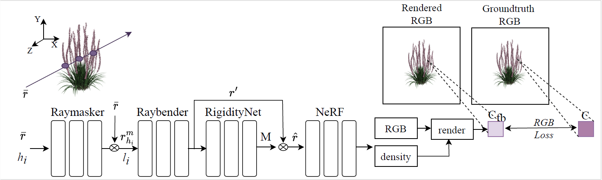
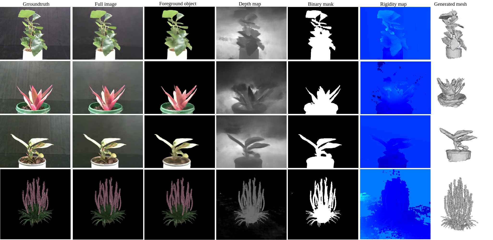
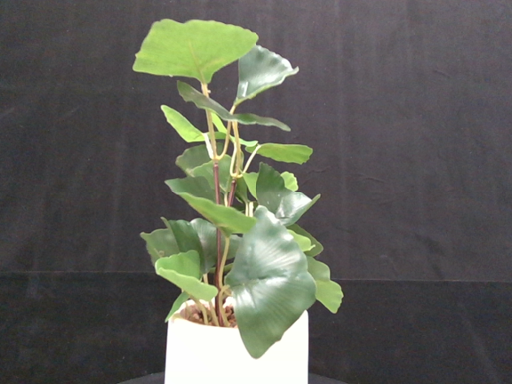
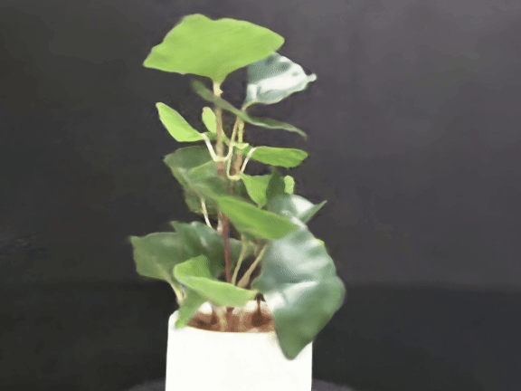
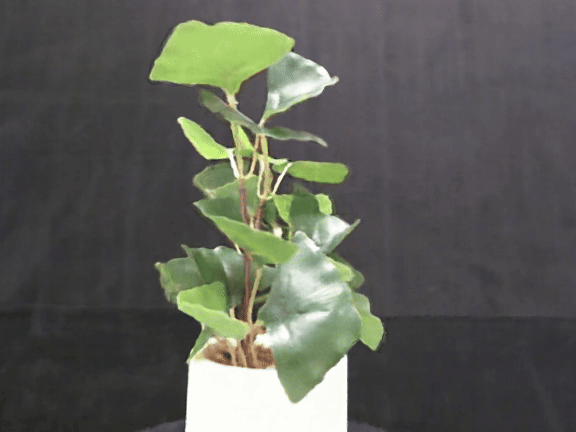
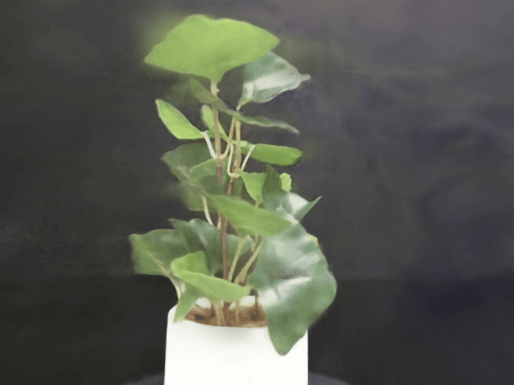

Dynamic view synthesis of thin structures with short-term movements
using Neural Radiance Fields from monocular videos
Abstract
Learning to generate motions of thin structures such as plant leaves in dynamic view synthesis is challenging. This is because thin structures usually undergo small but fast non-rigid motions as they interact with air and wind. When given a set of RGB images or videos of a scene with moving thin structures as input, existing methods that map the scene to its corresponding canonical space for rendering novel views fail as the object movements are too subtle compared to the background. Disentangling the objects with thin parts from the background scene is also challenging when the parts show fast and rapid motions. To address these issues, we propose a Neural Radiance Field (NeRF)-based framework that accurately reconstructs thin structures such as leaves and captures their subtle, fast motions. The framework learns the geometry of a scene by mapping the dynamic images to a canonical scene in which the scene remains static. We propose a ray masking network to further decompose the canonical scene into foreground and background, thus enabling the network to focus more on foreground movements. We conducted experiments using a dataset containing thin structures such as leaves and petals, which include image sequences collected by us and one public image sequence. Experiments show superior results compared to existing methods.
Case: Moving camera - moving object
Artificial plant
Synthetic plant
Rhoeo plant
Red flower

Aglaonema plant
Vasdeck
Overview
Additional Outputs
Case: Comparisons
Refernce View
Ours
Robust DyNerf
Non-Regid Nerf
